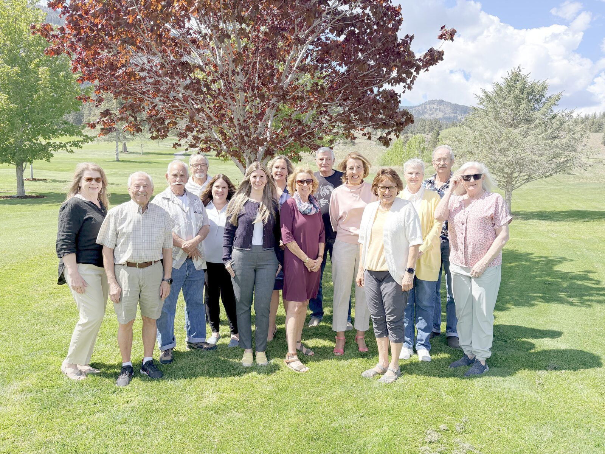
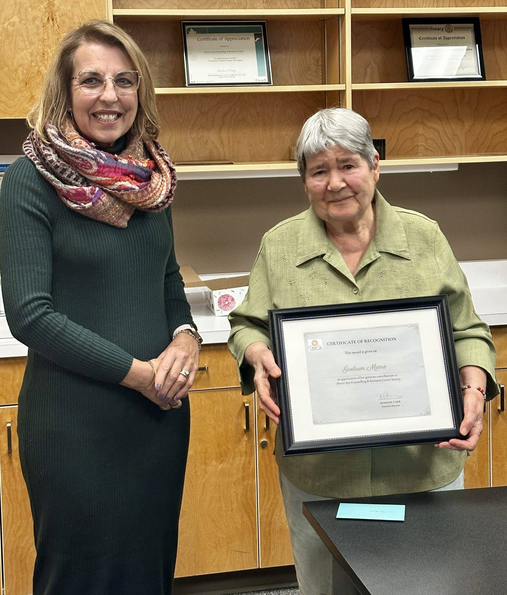
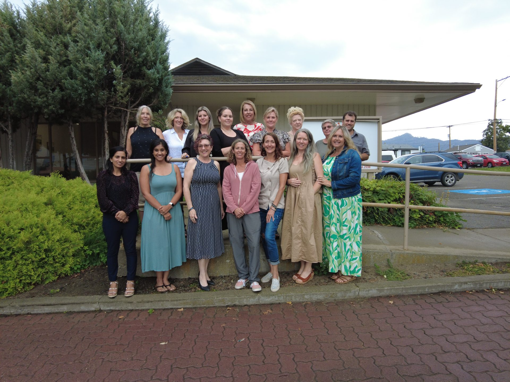

Your Support Changes Lives
Together, we continue to build a community where every individual can thrive. There is a role here for everyone — no matter how much time or money you have.
Volunteer with Desert Sun
Desert Sun enormously values the dedication of our individual and group volunteers. Due to the sensitive nature of much of the work we do, volunteers work in specific roles where they can make the greatest difference while the privacy and wellbeing of clients is fully protected.
In 2024 / 2025, our 16 volunteers contributed 4,252 hours of service to the South Okanagan community. Those hours represent real difference in people’s lives.

“If I drove a company car Monday to Friday and helped seniors from 9 to 5, I would probably be one of the happiest people on earth — because you’re needed, it’s important, and it’s appreciated.”
— Desert Sun Volunteer
Volunteer Role Descriptions
We have a range of meaningful volunteer opportunities across our programs. Explore the roles below and reach out to let us know where you’d like to help.
1. Community Kitchen Cooking Volunteer
Family SupportOur Community Kitchen is a warm, welcoming space where volunteers come together to support moms and their children. As a Cooking Volunteer, you will be an integral part of a caring team that nurtures both bodies and spirits.
2. Social Meals Volunteer
SeniorsSharing a meal is one of the most powerful ways to build connection. As a Social Meals Volunteer, you will help prepare and serve meals to seniors and take the time to truly connect with the people you are serving.
3. Friendly Visitor Volunteer
CompanionshipAs a Friendly Visitor Volunteer, you will be matched with a senior and commit to building a genuine, ongoing relationship with them through regular visits, shared activities, and simple acts of kindness.
4. Volunteer Driver
DrivingAs a Volunteer Driver, you will provide safe, reliable transportation to medical appointments in Penticton, Kelowna, and surrounding areas for seniors who are unable to use the Community Lift bus service.
Mileage reimbursement is provided for all drives.
5. Fundraising Volunteer
Events & CampaignsAs a Fundraising Volunteer, you will bring your organizational skills, creativity, and enthusiasm to help sustain and grow the programs that matter most to our community.
Interested in volunteering? We would love to hear from you!
“Unless someone like you cares a whole awful lot, nothing is going to get better. It is not.”
— Dr. SeussMake a Donation
Without you, our programs can’t exist. Every dollar raised transforms our community — keeping crisis lines staffed, shelters open, counsellors available, and seniors supported. Your support directly improves lives in the South Okanagan.
Desert Sun is a registered Canadian charity. All eligible donations receive an official tax receipt.
A single gift of any amount makes an immediate difference.
Regular monthly giving provides stable, reliable funding for our programs.
Leave a legacy in the South Okanagan through a bequest or planned gift.

What Your Donation Supports
Helps stock the Community Kitchen for one session, feeding families in need.
Covers one hour of professional counselling for a child, youth, or adult.
Provides one night of safe shelter for a woman and her children fleeing violence.
Funds a senior’s transportation to medical appointments for a full month.
Donate Online
Use the secure form below to make a one-time or monthly donation. All gifts receive an official Canadian tax receipt by email.
Donations processed securely through CanadaHelps.org. Desert Sun Counselling and Resource Centre Society is a registered Canadian charity.
Fundraise for Desert Sun
Community fundraising is at the heart of what makes Desert Sun’s work possible. Whether you join our team, host your own event, or participate in one of our annual campaigns, you are helping build a stronger South Okanagan.
Empty Bowls & Baskets Campaign
Annual CampaignDesert Sun’s signature fundraising campaign raises vital funds to support our programs. In 2024 / 2025, the virtual campaign raised $62,000. Participation opportunities include purchasing a bowl, sponsoring, and volunteering.
Get involved in the campaign →Host Your Own Event
DIY FundraisingHave an idea for a fundraiser? From community dinners to sporting events to workplace giving campaigns, we support individuals and groups who want to fundraise in their own way on behalf of Desert Sun.
Plan your fundraiser →Join Our Fundraising Team
Ongoing InvolvementPassionate about Desert Sun’s mission? Join our dynamic fundraising team and help organize events, build community partnerships, and rally support throughout the year. Training and support provided.
Join the team →Spread the Word
One of the most powerful things you can do for Desert Sun costs nothing at all. Talking about our work — with friends, family, coworkers, and neighbours — helps people in need find the support they are looking for, and helps funders and donors understand the difference their investment makes.
Follow us on social media, share our posts, and tell your network about the free programs available in the South Okanagan. You never know whose life you might change.

Key Messages to Share
Help spread awareness with these facts about Desert Sun.
Free programs serving people of all ages across the South Okanagan
Years serving Oliver, Osoyoos, and the surrounding South Okanagan community
Cost to clients for virtually all programs — Fee for Service counselling is also available for needs beyond our funded programs
Ready to make a difference?
Every hour volunteered, every dollar donated, and every story shared helps Desert Sun continue delivering free programs to the people who need them most.